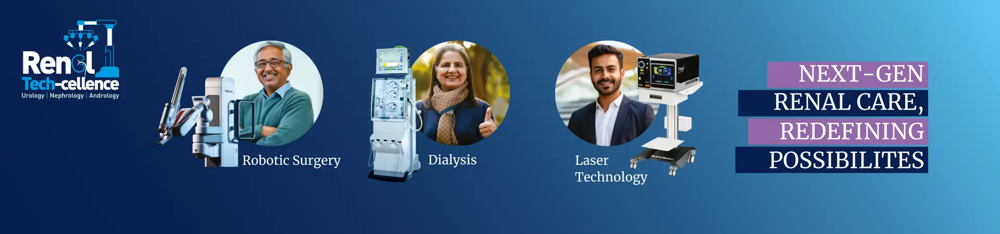

Doctors
Specialities&
Treatments
Treatments
Hospitals&
Directions
Directions
Book an
Appointment
Appointment
Contact Us

Centre of Excellence
Why CARE Hospitals
Our Locations
CARE Hospitals, a part of the Quality Care India Limited, brings international quality healthcare to serve patients across the world. With 17 healthcare facilities serving 7 cities across 6 states in India we are counted among the top 5 pan-Indian hospital chains.
Latest Blogs
.webp)
Implantation Bleeding Vs Periods: Know the difference
Woman often feel uncertain when they notice unexpected spotting or bleeding.A...
Read More
Cervical Cerclage: Types, Procedures, Precautions and Risks
For expectant mothers facing the risk of preterm birth, every medical advancement that can help carry a...
Read More
Itching During Dengue: Causes, Treatment and Home Remedies
Itching during dengue fever affects many patients and can cause significant discomfort during both the active
Read More
Bloating During Ovulation: Symptoms, Causes and Remedies
Many women experience an uncomfortable feeling of fullness in their abdomen during ovulation. This bloatin...
Read More
Everything to Know About Erythrocyte Sedimentation Rate (ESR)
In the field of medical diagnostics, the Erythrocyte Sedimentation Rate (ESR) test stands out as a simple ye...
Read More
Awards and Accreditations
CARE Hospitals is frequently recognized for its commitment to providing world-class healthcare & excellent patient services.
Best place to work
Member of Ethical Principles in Health Care (EPiHC)
Most preferred Workplace For 2024-25 By 4th Edition of India Today's Esteemed Marksmen Daily
Patient Experiences
Our patients are our best advocates, hear the inspiring stories of their treatment journey with CARE Hospitals.

Vascular Surgery | Patient Experience | CARE Hospitals
Spinal Pain Treatment | Patient Experienced| Dr.Atmaranjan Dash
Brain Tumour | Treatment Through BSKY | Patient Experience | Dr.Atmaranjan Dash